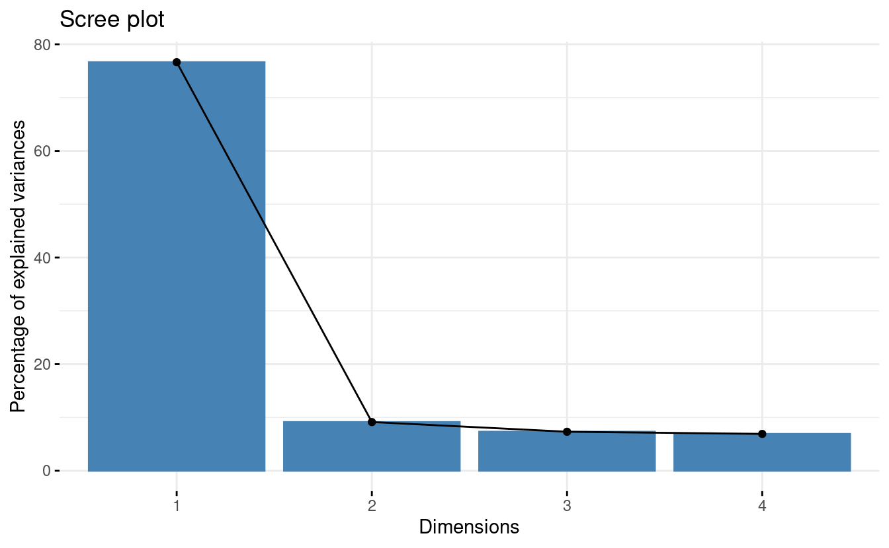

S03E03: Principal Component Analysis (PCA)
How to run a PCA in R and plot the results

Housekeeping
New to Code Club?
Check out the Code Club Computer Setup instructions, which also has pointers for if you’re new to R or RStudio. A few related Code Club sessions include:
Session goals
-
Learn how to perform a PCA in R using the
prcomp()function. -
Understand what is represented by the different components of the output.
-
Learn about three kinds of plots commonly used to visualize PCA results, and how to create them.
R packages we will use
- palmerpenguins – A data package containing the data we will explore
- tidyverse – A metapackage that includes ggplot2 which we’ll use for plotting, access to the
%>%pipe, etc. - broom – We’ll again use the
tidy()function in broom to create tidy dataframes from untidy statistical function output - glue – For pasting strings with variables
- factoextra – For easily creating a PCA biplot (and other PCA plots)
Getting set up
If you plan to just listen during the first part, you can wait until the Breakout Rooms to do the following. Also, instead of copying-and-pasting code, you could download this R script with today’s code.
-
Open a new R script in RStudio (
File=>New File=>R Script) -
Save the script, as something along the lines of
codeclub_S03E03_PCA.R -
Copy the following code into the script, for installing packages where needed:
## `require(glue)` returns FALSE if glue isn't installed; therefore, ## these lines will only try to install packages that aren't already installed. if (!require(palmerpenguins)) install.packages("palmerpenguins") if (!require(tidyverse)) install.packages("tidyverse") if (!require(broom)) install.packages("broom") if (!require(glue)) install.packages("glue") if (!require(factoextra)) install.packages("factoextra") -
Also copy the following code to load the packages into your R session:
-
Run the code above in the R console.
1 - A brief intro to PCA
Principal Component Analysis (PCA) is a popular method that creates “summary variables” (Principal Components) which represent as much of the information as possible from a high-dimensional dataset.
A high-dimensional dataset is a dataset with measurements for many variables, such as expression levels for thousands of genes.
PCA and similar methods like PCoA and nMDS (see box below) are also called “dimension reduction” or “ordination” methods, and can be classified as a type of unsupervised learning.
PCA is most commonly used for exploratory data visualization to see overall patterns in datasets, though you could also use the resulting Principal Components as response variables in a statistical model.
Glossary
- Principal Components (PCs) – the summary variables that a PCA produces.
- Loadings (rotations) – Loadings apply to the original variables. They are the contributions of variables to PCs, which form the “recipes” used to create the PCs.
- Scores (coordinates) – Scores apply to the samples. These scores, for each PC, are coordinates that can be used to create a score plot which is the “classic” PCA plot.
- Eigenvalue – The variance (amount of variation) explained by a PC.
Similar ordination methods
Besides PCA, other commonly used ordination methods that are also unconstrained (i.e., with no response variable) include the following:
-
Principal Coordinate Analysis (PCoA) is also known as Metric Multidimensional Scaling (MDS / mMDS). PCoA allows you to use distance measures other than Euclidean distance and can be run e.g. with
stats::cmdscale(). -
Non-metric Multidimensional Scaling (nMDS) is a non-metric method with quite different inner workings from PCA and PCoA that is especially suitable when your distance values are imprecise. It can be run e.g. with
vegan::metaMDS().
If you’re struggling to pick a suitable ordination approach for your data, take a look at Table 1 in Nguyen & Holmes 2019.
2 - prcomp(), scaling, and centering
To perform a PCA analysis in R, there are two functions that can be used without the need to load any packages: prcomp() and princomp().
(Like last week’s aov() function, these functions are in the stats package, which is loaded into your R session by default. More PCA functions are available in other packages but these tend to be very similar and/or simply wrap the two base R functions.)
We will use prcomp(), which is preferred among these two due to its slightly better accuracy1.
Two important data pre-processing steps…
…need to be done for many PCA analyses. Luckily, these can be done alongside the PCA computation in a single call to prcomp():
Centering the data – Centering the data around the origin (subtracting the mean of variables) is basically always advisable and is controlled by the center argument of prcomp(), which is set to TRUE by default.
Scaling the data – Standardizing the standard deviation across the variables in the data (i.e., scaling) is advisable when variables are in different units or on different scales but is generally not recommended when all variables are of the same type and in the same units (e.g., gene counts2). Whether or not to scale the data is controlled by the scale. argument of prcomp(), which is set to FALSE by default.
3 - Our first PCA
As a simple example, we want to run a PCA summarizing the four numerical measurements taken for each penguin (bill length, bill depth, flipper length, and body mass) in the palmerpenguins dataset.
First, we’ll subset the penguins dataframe to:
-
Remove rows with
NAs (prcomp()will return an error if any of our variables containNAs) -
Select only the columns that we want to include in the PCA
## Remove rows with NAs
penguins_noNA <- drop_na(penguins)
## Select columns
penguins_for_pca <- penguins_noNA %>%
select(bill_length_mm, bill_depth_mm, flipper_length_mm, body_mass_g)Let’s take a look at the resulting dataframe:
head(penguins_for_pca)
#> # A tibble: 6 × 4
#> bill_length_mm bill_depth_mm flipper_length_mm body_mass_g
#> <dbl> <dbl> <int> <int>
#> 1 39.1 18.7 181 3750
#> 2 39.5 17.4 186 3800
#> 3 40.3 18 195 3250
#> 4 36.7 19.3 193 3450
#> 5 39.3 20.6 190 3650
#> 6 38.9 17.8 181 3625
dim(penguins_for_pca)
#> [1] 333 4Run the PCA!
Now, we are ready to run the PCA:
pca <- prcomp(penguins_for_pca, scale = TRUE)
# (Because `center = TRUE` by default, we don't have to include that.)Scaling is desirable here because as we saw above, the variables we use in our PCA are in different units (mm and g).
More on scaling (click here)
Because our variables are in different units, standard deviations for those variables may differ dramatically. This would lead the PCA to put more weight on variables with a higher standard deviation, which we don’t want if those differences are merely a consequence of different units.
If we check the standard deviations in our dataset, we can indeed see large differences:
map(penguins_for_pca, sd)
#> $bill_length_mm
#> [1] 5.468668
#>
#> $bill_depth_mm
#> [1] 1.969235
#>
#> $flipper_length_mm
#> [1] 14.01577
#>
#> $body_mass_g
#> [1] 805.21584 - Exploring the output I
Like with objects returned by the statistical tests we saw in the previous weeks, the object returned by prcomp() is not just a dataframe or even a regular list…
class(pca)
#> [1] "prcomp"… and trying to print the object to screen will only give you a summary of sorts:
pca
#> Standard deviations (1, .., p=4):
#> [1] 1.6569115 0.8821095 0.6071594 0.3284579
#>
#> Rotation (n x k) = (4 x 4):
#> PC1 PC2 PC3 PC4
#> bill_length_mm 0.4537532 -0.60019490 -0.6424951 0.1451695
#> bill_depth_mm -0.3990472 -0.79616951 0.4258004 -0.1599044
#> flipper_length_mm 0.5768250 -0.00578817 0.2360952 -0.7819837
#> body_mass_g 0.5496747 -0.07646366 0.5917374 0.5846861Like we saw last week with aov(), we can get a more useful summary of the results with the summary() function:
summary(pca)
#> Importance of components:
#> PC1 PC2 PC3 PC4
#> Standard deviation 1.6569 0.8821 0.60716 0.32846
#> Proportion of Variance 0.6863 0.1945 0.09216 0.02697
#> Cumulative Proportion 0.6863 0.8809 0.97303 1.00000This shows us the “importance” of the 4 principal components that our PCA returned, i.e. the amount of variation they explain.
Seeing all elements with str()
These summaries are nice and all, but like we saw in previous weeks, they don’t make it obvious where and how to access all the information contained in the object.
Running the str() function is a good start for getting to the raw contents of the object, even though the information printed isn’t easy to look at:
str(pca)
#> List of 5
#> $ sdev : num [1:4] 1.657 0.882 0.607 0.328
#> $ rotation: num [1:4, 1:4] 0.454 -0.399 0.577 0.55 -0.6 ...
#> ..- attr(*, "dimnames")=List of 2
#> .. ..$ : chr [1:4] "bill_length_mm" "bill_depth_mm" "flipper_length_mm" "body_mass_g"
#> .. ..$ : chr [1:4] "PC1" "PC2" "PC3" "PC4"
#> $ center : Named num [1:4] 44 17.2 201 4207.1
#> ..- attr(*, "names")= chr [1:4] "bill_length_mm" "bill_depth_mm" "flipper_length_mm" "body_mass_g"
#> $ scale : Named num [1:4] 5.47 1.97 14.02 805.22
#> ..- attr(*, "names")= chr [1:4] "bill_length_mm" "bill_depth_mm" "flipper_length_mm" "body_mass_g"
#> $ x : num [1:333, 1:4] -1.85 -1.31 -1.37 -1.88 -1.92 ...
#> ..- attr(*, "dimnames")=List of 2
#> .. ..$ : NULL
#> .. ..$ : chr [1:4] "PC1" "PC2" "PC3" "PC4"
#> - attr(*, "class")= chr "prcomp"In the first breakout room session, you’ll explore the contents of our pca object a bit more.
Breakout Rooms I
Exercise 1
If you didn’t do so already, get set up for the remaining exercises. Either download this R script, open it in RStudio, and run the code, or:
-
Open a new R script in RStudio (
File=>New File=>R Script) -
Save the script, as something along the lines of
codeclub_S03E03_PCA.R -
Copy the following code into the script and then run it in the R console:
## Install packages if needed
## (`require(glue)` returns FALSE if glue isn't installed; therefore,
## these lines will only try to install packages that aren't already installed.)
if (!require(palmerpenguins)) install.packages("palmerpenguins")
if (!require(tidyverse)) install.packages("tidyverse")
if (!require(broom)) install.packages("broom")
if (!require(glue)) install.packages("glue")
if (!require(factoextra)) install.packages("factoextra")
## Load the packages into your R session
library(palmerpenguins)
library(tidyverse)
library(broom)
library(glue)
library(factoextra)
## Prep the penguin data for the PCA
penguins_noNA <- drop_na(penguins)
penguins_for_pca <- penguins_noNA %>%
select(bill_length_mm, bill_depth_mm, flipper_length_mm, body_mass_g)
## Run the PCA
pca <- prcomp(penguins_for_pca, scale = TRUE)Exercise 2
How can you access the different components in the List of 5 that is summarized when running str(pca)? For example, say you wanted to see the rotation element in its entirety, how could you do this?
Hints (click here)
The $ (dollar sign) operator can be used to access the different elements (as implied by the dollar signs shown in front of the names of the elements).
Solution (click here)
To see the rotation element, type pca$rotation:
pca$rotation
#> PC1 PC2 PC3 PC4
#> bill_length_mm 0.4537532 -0.60019490 -0.6424951 0.1451695
#> bill_depth_mm -0.3990472 -0.79616951 0.4258004 -0.1599044
#> flipper_length_mm 0.5768250 -0.00578817 0.2360952 -0.7819837
#> body_mass_g 0.5496747 -0.07646366 0.5917374 0.5846861Exercise 3 (bonus)
Take a look at the contents of all five elements in the pca object. Do you have a (rough) understanding of what each represents?
Solution (click here)
All elements of the output are explained in the next section of this page.
5 - Exploring the output II
Let’s take a quick look together at the three most important elements in the object returned by prcomp(), which we named pca:
-
pca$sdevis a vector of standard deviations associated with each principal component (PC), i.e. it is the amount of variation explained by each PC. We also saw this information when runningsummary(pca)and we’ll use it to create the scree plot.pca$sdev #> [1] 1.6569115 0.8821095 0.6071594 0.3284579 -
pca$xis the most-used part of the output: a matrix containing the scores (or coordinates) for each sample for each PC, used to create a score plot and part of the biplot.head(pca$x) #> PC1 PC2 PC3 PC4 #> [1,] -1.850808 -0.03202119 0.23454869 0.5276026 #> [2,] -1.314276 0.44286031 0.02742880 0.4011230 #> [3,] -1.374537 0.16098821 -0.18940423 -0.5278675 #> [4,] -1.882455 0.01233268 0.62792772 -0.4721826 #> [5,] -1.917096 -0.81636958 0.69999797 -0.1961213 #> [6,] -1.770356 0.36567266 -0.02841769 0.5046092 -
pca$rotationis a matrix that contains the loadings for each variable in each PC. These are the “recipes” for creating each PC, with higher absolute values indicating a larger effect of the variable on the PC. The sign (- or +) matters too: in PC1, larger values ofbill_depth_mmlower the PC value, and vice versa for the other three variables. This matrix will be used in creating the biplot.pca$rotation #> PC1 PC2 PC3 PC4 #> bill_length_mm 0.4537532 -0.60019490 -0.6424951 0.1451695 #> bill_depth_mm -0.3990472 -0.79616951 0.4258004 -0.1599044 #> flipper_length_mm 0.5768250 -0.00578817 0.2360952 -0.7819837 #> body_mass_g 0.5496747 -0.07646366 0.5917374 0.5846861
...And the remaining two elements (click here)
-
pca$centeris a vector containing the means for each variable, which was subsequently used for centering the data (this would contain justFALSEif the data wasn’t centered).pca$center #> bill_length_mm bill_depth_mm flipper_length_mm body_mass_g #> 43.99279 17.16486 200.96697 4207.05706 -
pca$scalesimilarly is a vector containing the scaling constant for each variable (column) in the data, and would beFALSEif the data wasn’t scaled.pca$scale #> bill_length_mm bill_depth_mm flipper_length_mm body_mass_g #> 5.468668 1.969235 14.015765 805.215802
6 - Scree plot
A “scree plot”3 is a barplot that shows the amount of variation explained by each PC.
We’ll make a base R version of this plot (gasp!) because it is so quick to make, and we don’t need this figure to be fancy:
plot(pca)
In this scree plot, we show the variance (i.e. the eigenvalue) associated with each PC (these are the square roots of the standard deviations in pca$sdev.)
Interpretation
This gives us a quick visual overview of the importance of the PCs: PC1 is by far the most important, and PC4 doesn’t do much at all. (PCs are always ordered by the amount of variation they explain, with PC1 explaining most.)
7 - Score (classic PCA) plot
A “score plot” shows the scores (coordinates) for each sample along two PCs, typically the first two.
We’re going to need a dataframe to plot. But if we were to broom::tidy() the scores matrix (pca$x), akin to what we’ve done with t-test and ANOVA output in previous weeks, we would get a dataframe with all PCs in one column that wouldn’t be that easy to plot.
So in this case, we’ll just manipulate pca$x ourselves – in particular, we want to add the source penguins_noNA dataframe back to it, which will allow us to color the points by, say, species.
## Column-bind (= put side-by-side) the scores and the source dataframe
pca_scores <- bind_cols(data.frame(pca$x), penguins_noNA)
head(pca_scores)
#> PC1 PC2 PC3 PC4 species island bill_length_mm
#> 1 -1.850808 -0.03202119 0.23454869 0.5276026 Adelie Torgersen 39.1
#> 2 -1.314276 0.44286031 0.02742880 0.4011230 Adelie Torgersen 39.5
#> 3 -1.374537 0.16098821 -0.18940423 -0.5278675 Adelie Torgersen 40.3
#> 4 -1.882455 0.01233268 0.62792772 -0.4721826 Adelie Torgersen 36.7
#> 5 -1.917096 -0.81636958 0.69999797 -0.1961213 Adelie Torgersen 39.3
#> 6 -1.770356 0.36567266 -0.02841769 0.5046092 Adelie Torgersen 38.9
#> bill_depth_mm flipper_length_mm body_mass_g sex year
#> 1 18.7 181 3750 male 2007
#> 2 17.4 186 3800 female 2007
#> 3 18.0 195 3250 female 2007
#> 4 19.3 193 3450 female 2007
#> 5 20.6 190 3650 male 2007
#> 6 17.8 181 3625 female 2007Now we’re ready to create the plot:
score_plot <- ggplot(pca_scores) +
geom_point(aes(x = PC1, y = PC2, color = species)) +
theme_classic()
score_plot
Interpretation
Across these four measurements, Gentoo Penguins can be very clearly distinguished from the other two species, whereas among Adelie and Chinstrap Penguins, there are average differences but they are not fully separable.
A better aspect ratio
One way to improve our plot is to set the aspect ratio (the proportional relationship between the height and the width) according to the relative percentages of variation explained by the two plotted PCs: because PC1 on the x-axis explains more variation, we want the plot to be wide.
To get the percentages in a dataframe, now we will use the tidy() function. But because the output of prcomp() contains multiple elements, we’ll have to point tidy() to the $sdev element using the matrix argument (see the docs):
pca_eigen <- tidy(pca, matrix = "eigenvalues")
pca_eigen
#> # A tibble: 4 × 4
#> PC std.dev percent cumulative
#> <dbl> <dbl> <dbl> <dbl>
#> 1 1 1.66 0.686 0.686
#> 2 2 0.882 0.195 0.881
#> 3 3 0.607 0.0922 0.973
#> 4 4 0.328 0.0270 1Now, we’ll store the percentages explained by the first two PCs (rounded to one decimal):
# (Note: pca_eigen$percent contains proportions, not percentages...)
PC1_percent <- round(pca_eigen$percent[1] * 100, 1)
PC2_percent <- round(pca_eigen$percent[2] * 100, 1)
PC1_percent
#> [1] 68.6
PC2_percent
#> [1] 19.5Finally, we can modify the aspect ratio, which is expressed as height / width – and we’ll also move the legend to the top, and add the percentages to the axis titles:
score_plot <- score_plot +
theme(aspect.ratio = PC2_percent / PC1_percent,
legend.position = "top") +
labs(x = glue("PC1 ({PC1_percent}%)"),
y = glue("PC2 ({PC2_percent}%)"))
score_plot
8 - Biplot
A “biplot” shows the scores of samples for two PCs and the loadings for the original variables along the two PCs.
Because biplots are more complicated to make “from scratch” using ggplot2, we will turn to the package factoextra, which has a convenient function for making biplots, fviz_pca():
fviz_pca(pca,
label = "var", # Show labels for variables only
habillage = penguins_noNA$species) + # color by / shape by
theme(legend.position = "top")
While this plot can certainly be improved upon, biplots are by their nature a little unwieldy.
Interpretation
Biplots can be especially useful when you have a modest number of original variables, like here. Some information we can glean from this particular biplot:
-
Flipper length and body mass are highly correlated among individuals, even across species. So flipper length relative to body mass is similar across species.
-
Gentoo penguins are larger and with narrower bills than the other two species.
While we made a scree plot with base R and a score plot with “base ggplot2”, there are also factoextra functions for these and for other PCA plots:
fviz_eig()– scree plotsfviz_pca_ind()– score plotsfviz_pca_var()– “correlation circles”; plots showing loadings only (example).fviz_contrib()– a barplot with the contribution of variables to 1 PC (example).
Or, to create a biplot from scratch... (click here)
First, let’s save the loadings in a dataframe:
pca_loadings <- data.frame(pca$rotation) %>%
rownames_to_column("var")Next, we start with the score plot object score_plot we created above.
What we need to add are the variable loading, which we’ll do with geom_segment() to draw arrows, and geom_text() to add text labels near the tips of the arrows:
## To make the arrows longer (all by the same amount),
## just to improve the visualization, we use a multiplication factor:
mult <- 2.5
score_plot +
## geom_segment draws lines
geom_segment(data = pca_loadings,
## The lines should start from the origin:
aes(x = 0, y = 0, xend = PC1 * mult, yend = PC2 * mult),
## We turn the line into an arrow:
arrow = arrow(),
## A gray-tone might work better than black:
color = "grey40") +
geom_text(data = pca_loadings,
## The text labels go at the end of the arrows:
aes(x = PC1 * mult, y = PC2 * mult, label = var),
## We left-align (hjust = 0) and lower (vjust = 1) the labels
hjust = 0, vjust = 1,
## Again, we use a gray color:
color = "grey40")
Breakout Rooms II
Exercise 4
Above, we plotted the scores for the first two PCs (PC1 and PC2) in our score plot and biplot. Now, create a biplot with another combination of two PCs.
Take a look at the help for the fviz_pca() function by typing
?fviz_pca to find out how you might be able to plot different PCs.
Hints (click here)
-
The
axesargument tofviz_pca()controls which axes will be plotted; this argument accepts a vector of two numbers. -
Do you think it would be worth plotting PC4, which explains <3% of the variation? Would plotting PC3 with one of the PCs we already plotted be informative?
Solution (click here)
To plot PC1 & PC3 (which may be a better choice than including PC4 because it explains so little variation):
fviz_pca(pca,
axes = c(1, 3),
label = "var",
habillage = penguins_noNA$species) +
theme(legend.position = "top")
Behold, now we can distinguish much better between Adelie and Chinstrap Penguins!
Exercise 5
Run the PCA for just one of the three penguin species.
Then, make a biplot of the results, in which you color the points by something else than species, e.g. by sex. (If you want, also make a scree plot and/or a score plot.)
Hints (click here)
-
Use the dplyr function
filter()on thepenguins_noNAobject to select rows corresponding to one penguin species. -
After that, the code will be nearly identical to that used before; just make sure to refer to the correct objects if you copy-and-paste code.
Solution (click here)
This example solution runs a PCA for Gentoo Penguins only.
First, select rows corresponding to our focal penguin species, and run the PCA:
## (Save this object rather than using one pipeline,
## because you'll need it color the biplot by a factor)
onepenguin_noNA <- penguins_noNA %>% filter(species == "Gentoo")
pca <- onepenguin_noNA %>%
select(bill_length_mm, bill_depth_mm, flipper_length_mm, body_mass_g) %>%
prcomp(scale = TRUE)Next, we create the biplot:
fviz_pca(pca,
label = "var",
habillage = onepenguin_noNA$sex) +
theme(legend.position = "top")
To create a scree plot:
plot(pca)
Or a scree plot with fviz_eig():
fviz_eig(pca)

To create a quick score plot (no aspect ratio manipulation):
bind_cols(data.frame(pca$x), onepenguin_noNA) %>%
ggplot() +
geom_point(aes(x = PC1, y = PC2, color = sex)) +
theme_classic()
Or a score plot with fviz_pca_ind():
fviz_pca_ind(pca, geom = "point", habillage = onepenguin_noNA$sex)
Exercise 6 (bonus)
Make a scree plot of our original PCA results with ggplot2 instead of base R.
Hints (click here)
-
Use the
pca_eigendataframe that we created above for plotting, and use the geomgeom_col(). -
Think about what exactly you want to plot on the y-axis. The variance, like in the base R scree plot? Or the proportion/percentage of the variance explained?
Solution (click here)
There are a couple of different things that could reasonably be put on the y-axis, but perhaps the clearest option is to put the proportion or percentage of variation (=variance) explained, like below:
ggplot(pca_eigen, aes(x = PC, y = percent)) +
geom_col() +
labs(y = "Proportion of the variation explained") +
theme_minimal()
(Note once again that the column in pca_eigen is called percent, but it actually contains proportions.)
Further watching & reading
- “StatQuest” videos on:
- Chapter on Multivariate Analysis from the book “Modern Statistics for Modern Biology”
- Nguyen & Holmes 2019: “Ten quick tips for effective dimensionality reduction”
-
However, high-throughput sequencing results such as gene counts do need to be normalized by sample sequencing depth (“library size”) and subjected to a variance stabilizing normalization. ↩︎
-
As “The R Book” (Crawley 2012) explains: “This is called a scree plot in PCA because it is supposed to look like a cliff face on a mountainside (on the left), with a scree slope below it (the tail on the right).” ↩︎